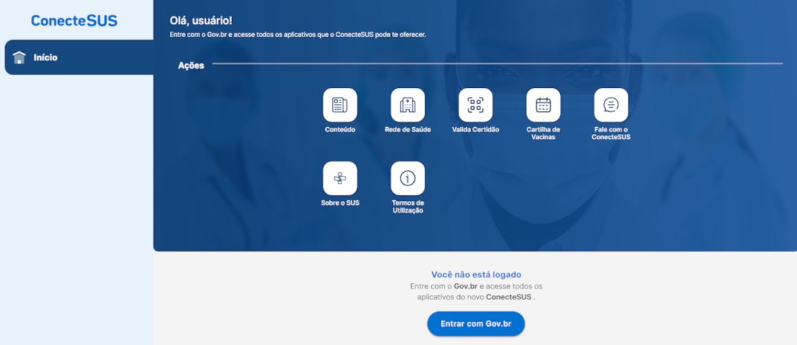
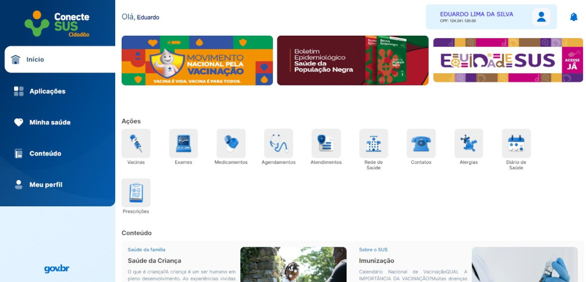
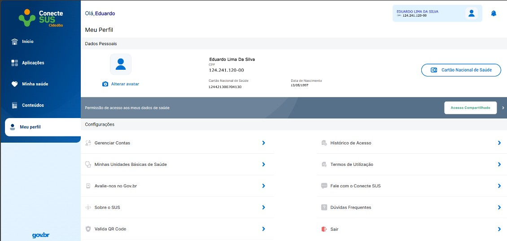

Como olhar o número de identificação do usuário do SUS pelo Conecte Sus 
Aqui temos os primeiros passos para conseguir identificar o número do CNS pelo CONECTESUS
Primeiro passo:
Basta acessar o site https://conectesus-paciente.saude.gov.br/login e entrar com a conta do Gov.com

Segundo passo:
Fazer login com CPF e SENHA
Terceiro passo:
Basta clicar no canto inferior do lado esquerdo onde tem Meu perfil
Quarto passo:
O número do Cartão Nacional de Saúde irá aparecer logo no centro
